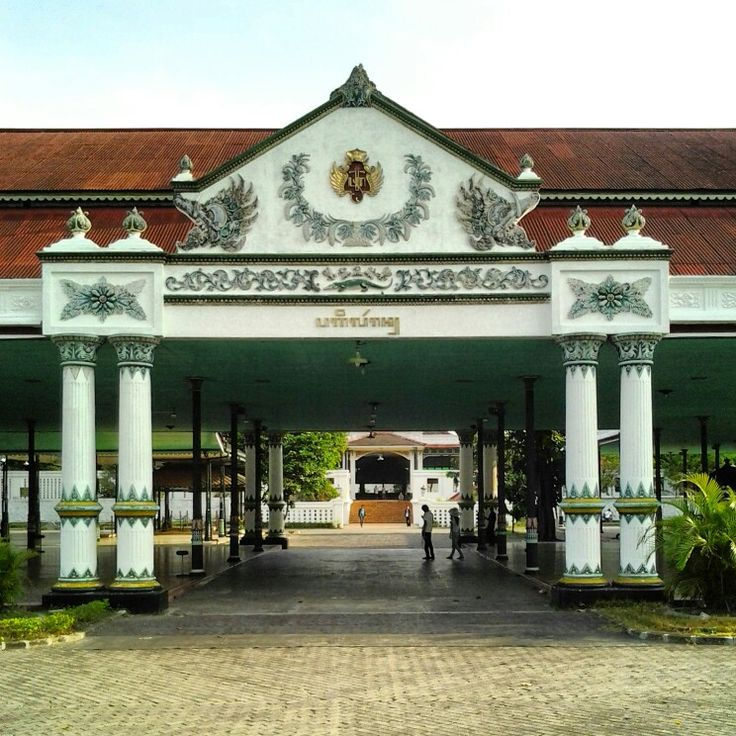
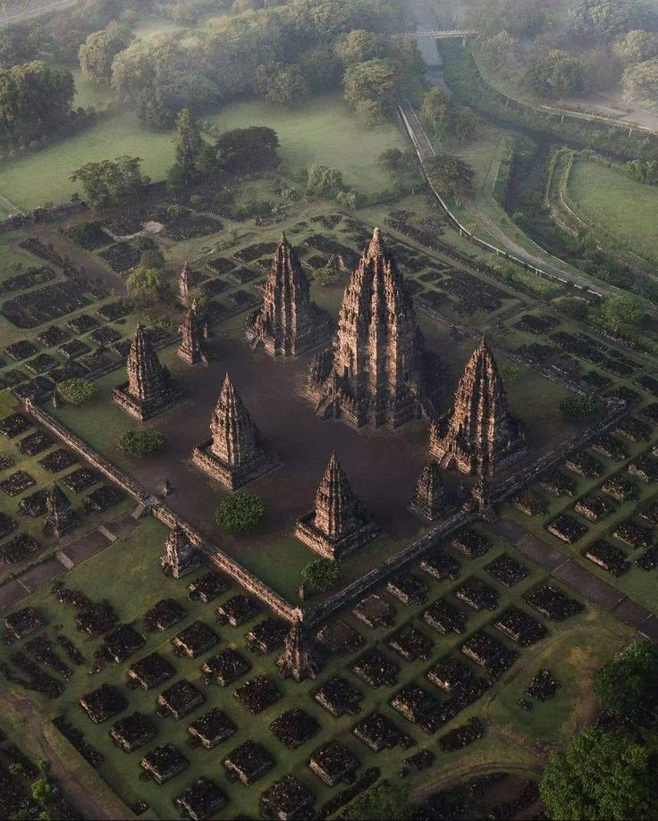
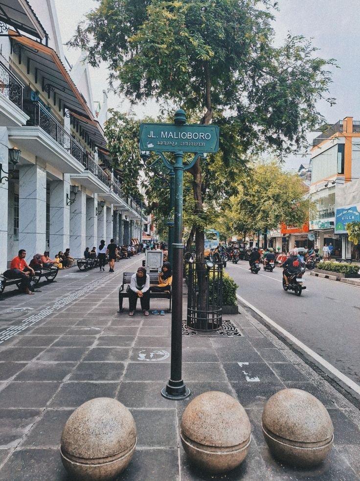

Jelajahi Sekarang
Destinasi Estetik

Pusat Budaya
Keraton Yogyakarta
Jantung spiritual dan budaya Jogja yang berdiri sejak 1755. Arsitektur Jawa klasiknya yang agung menjadi simbol keberlanjutan tradisi di tengah modernitas.

Arsitektur Hindu
Candi Prambanan
Kompleks percandian Hindu paling megah di Asia Tenggara. Siluet menara-menaranya yang lancip saat senja sangat cocok untuk fotografi estetik.

Ikon Kota
Jalan Malioboro
Nadi kehidupan Jogja. Deretan kios batik, gerobak angkringan, dan alunan musik jalanan menciptakan atmosfer unik yang susah dilupakan.

Alam & Pesisir
Gunung Kidul
Deretan pantai pasir putih berpadu tebing karang dramatis. Pantai Indrayanti, Timang, dan Ngrenehan menawarkan pemandangan laut selatan paling spektakuler.